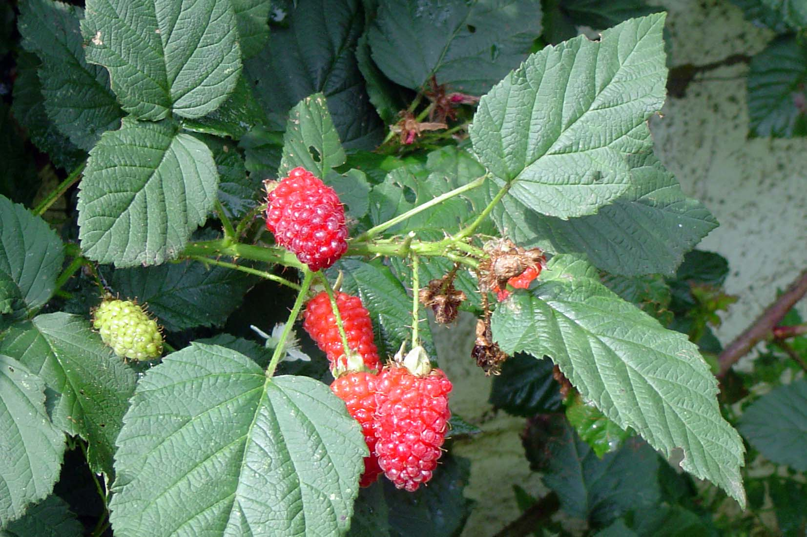

Rubus idaeus
| common name | red raspberry | |
| en español | frambuesa | |
| plant family | Rosaceae (rose) | |
| parts used | fresh and dried leaves and fruit |
 from Wikimedia Commons by Door Toubib op de Nederlandstalige Wikipedia, CC BY-SA 3.0
observations/description
dried leaf
- bright light/mid-green color, some pale sage bits, some larger dark green leaves
- fluffy leaf, almost approaching artichoke levels of fluffiness
- very pleasant aroma, cooling, reminiscent of the fruit and of chrysanthemum
"Rubus idaeus", Wikipedia
- bears leaves with three to seven leaflets
- flowers are produced in late spring on short racemes on the tips of side shoots, each flower with five white petals
- fruit is red, edible, and sweet but tart-flavoured, produced in summer or early autumn
- in botanical terminology, it is not a berry at all, but an aggregate fruit of numerous drupelets around a central core
distribution/conservation status
"Rubus idaeus", Wikipedia
- native to Europe and northern Asia
- commonly cultivated in other temperate regions
- listed as 'Least Concern' on IUCN Red List of Threatened Species
primary actions
The Yoga of Herbs, p. 138-9
- astringent, alterative, tonic, hemostatic, antiemetic
The Modern Herbal Dispensatory, p. 292-3
- antacid, antiemetic, antinausea, antidiarrheal, uterine tonic
Spiritual Herbalism, p. 106-7
- astringent, alterative, antiabortive, antiemetic, antispasmodic, diaphoretic, hemostatic, laxative, oxytocic, parturient, refrigerant, stimulant, tonic
The New Age Herbalist, p. 105
- astringent, reproductive tonic, galactagogue, antispasmodic
system affinities
reproductive, digestive
primary uses
The Yoga of Herbs, p. 138-9
- effective anti-pitta herb
- affinity for the colon and the female reproductive system
- indicated for diarrhea, dysentery, intestinal flu, vomiting
- indicated for dysmenorrhea, menorrhagia, uterine bleeding, prolapse of uterus or anus
- strongly astringent and tonifying action
- raises prolapse, tones muscles of the lower abdomen, soothes mucous membranes, allays inflammation
- indicated for hemorrhoids, inflamed mucous membranes, sores, wounds
- safe/mild astringent for sore throats, diarrhea, nausea, heartburn, ulcers
- with śatāvarī (3 parts to each 1 part raspberry) for a uterine tonic
- with rose and hibiscus for menstrual complaints
- with small amounts of myrrh for a good astringent douche for uterine inflammation, leucorrhea, or prolapse
The Modern Herbal Dispensatory, p. 292-3
- used as a tonic to strengthen uterine muscles in preparation for childbirth
- helps relieve and prevent morning sickness
- leaves contain manganese, which oxygenize cells
- berries contain anthocyanin, which contributes to heart health, protects the eyes, guards against cancer, and helps protect against diabetes
The New Age Herbalist, p. 105
- good astringent remedy
- safe for children's diarrhea
- cold infusion for a gargle or mouthwash
- tones the uterine and pelvic muscles
- enriches and encourages flow of milk
- fruit is rich in nutrients
- combats anemia
- Chinese raspberrries are used to strengthen kidneys and treat enuresis
Spiritual Herbalism, p. 106-7
- known for balancing sexual health issues
- tightens all things that are overflowing, including bleeding
- facilitates efficient bleeding
- tones and strengthens uterus
- indicated for menstrual cramps, excessive menstruation, leukorrhea, uterine prolapse
- used after birth to restore the uterus
- indicated for nausea, vomiting, diarrhea
- good for sore throat and canker sores
- enriches breast milk
- use on wounds/sores to aid with bleeding
- indicated for conjunctivitis
- supports mucous membranes and gums
- safe at every stage of life, normalizes blood flow for young people
energetics
The Yoga of Herbs, p. 138-9
- reduces pitta, kapha; increases vāta (in excess)
- astringent taste - sweet post-digestive effect
- cooling
The Modern Herbal Dispensatory, p. 292-3
- cooling, slightly drying, slightly constricting
Spiritual Herbalism, p. 106-7
- mild, bitter, cool
pharmacology
The New Age Herbalist, p. 105
- leaves
- fragarine, tannin
- fruit
- sugars, citric acid, malic acid, vitamin A, vitamin B, vitamin C, vitamin E, pectin, volatile oil, iron, calcium, phosphorus
Spiritual Herbalism, p. 106-7
- tannins, flavonoids, glycosides, vitamin B, iron, manganese, magnesium, potassium
- fruit is very high in vitamin C
contraindications/pharmaceutical interactions/warnings
The Yoga of Herbs, p. 138-9
- some varieties of red raspberry are known to promote abortion
- avoid where there is high vāta or chronic constipation
The Modern Herbal Dispensatory, p. 292-3
- no known warnings
Spiritual Herbalism, p. 106-7
- avoid where there is high vāta or chronic constipation
preparations
The Modern Herbal Dispensatory, p. 292-3
- standard infusion
- dried leaves, 30 g: 1 L
- glycerite
- dried leaves, 1:8
- powder
Herbal Materia Medica, p. 33
- standard infusion
- dried herb, 1:32
The Yoga of Herbs, p. 79, 138-9
- hot infusion
- fresh leaves, 1:4 (strong)
- fresh leaves, 1:8 (moderate)
- cold infusion
- fresh leaves, 1:4 (strong)
- fresh leaves, 1:8 (moderate)
- powder
- paste
dosage
The Modern Herbal Dispensatory, p. 292-3
- standard infusion: 4-8 oz, 3/day
- glycerite: 10-30 mL, 3/day
- powder: 1000-2000 mg, 3/day
Herbal Materia Medica, p. 33
- standard infusion: as needed
The Yoga of Herbs, p. 92, 138-9
- hot infusion: 2 oz, 3/day
- cold infusion: 2 oz, 3/day
- powder: 250-1000 mg, 3/day
extra information
Spiritual Herbalism, p. 106-7
- Native Americans used raspberry in smoking rituals
- people in southwest Asia and north Africa fed leaves to their stallions for sexual health
personal experiences/simples
macerate (1 tbsp: 16 oz, 12+ hours), dried leaf
- rich amber hue
- very pleasant aroma and flavor; reminiscent of iced tea with lemon, similar to lemon balm; very delicious
- feels nutritive/restorative
- also reminds me a bit of motherwort
tisane (1.5 tsp: 12 oz, 10 minutes), dried leaf
- dark yellow color
- sweet aroma
- flavor is similar to that of the macerate, a little more chrysanthemum flavor coming through, much more savory than sweet though
- slight corn flavor coming through
- would pair well with calendula for an astringent tea
- pleasant tannins underneath the sides of the tongue
- activates underneath the tongue
- sweet aftertaste, dry mouthfeel
- feels nutritive like the macerate
- activating the heart/solar plexus axis
- an ally
witchcraft
Spiritual Herbalism, p. 106-7
- epitome of self-preservation and self-love
- teaches us the efficient exchange of power and flow from fullness
- enables us to see when we have overextended ourselves and to see what we need for ourselves, protects from giving in excess
- nourishes the creative life force energy of the feminine
- prickles remind us that individuals should approach beauty with respect, protective of the feminine
- planetary influences: venus, water
The Witch's Encyclopedia of Magical Plants, p. 262
- associated with Mt. Ida in Crete, the mythical birthplace of Zeus
- raspberries were white until the nymph Ida scratched her breast while tending to the infant Zeus and stained the fruit red
- Iroquois used black raspberries to prevent a wife from 'fooling around'
- used for luck and fidelity in hoodoo
- elements: water
- astrological influence: leo, taurus, venus
recipes
sources
Easely, Thomas and Steven Horne. The Modern Herbal Dispensatory (2016)
Frawley, David and Vasant Lad. The Yoga of Herbs: An Ayurvedic Guide to Herbal Medicine (1986)
Goldberg Blackthorn, Samantha. Ace of Cups Herbal Medicine and Botanical Magic Herbal School (2024)
Kynes, Sandra. The Witch's Encyclopedia of Magical Plants (2024)
Mabey, Richard et al. The New Age Herbalist (1988)
Moore, Michael. Herbal Materia Medica, Fifth Edition (1995)
Rose, Karen M. The Art & Practice of Spiritual Herbalism (2022)
"Rubus idaeus" on Wikipedia. Retrieved 8 May 2025.